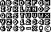

이 포스트는 WebGL에 관한 여러 글에서 이어집니다. 마지막 글은 WebGL에서 텍스트를 렌더링하기 위한 텍스처 사용에 관한 것이었습니다. 아직 읽지 않았다면 계속하기 전에 해당 글을 먼저 확인하는 게 좋습니다.
마지막 글에서 우리는 WebGL Scene에서 텍스트를 그리기 위해 텍스처를 사용하는 방법을 살펴봤습니다. 해당 기술은 매우 일반적이고 아바타 위에 이름을 지정하려는 멀티 플레이어 게임에 유용합니다. 이름은 거의 바뀌지 않기 때문에 이는 완벽합니다.
UI처럼 자주 바뀌는 다량의 텍스트를 렌더링하고 싶다고 가정해봅시다. 이전 글의 마지막 예제에서 확실한 해결책은 각 문자에 대한 텍스처를 만드는 겁니다. 그렇게 하도록 마지막 샘플을 변경해보겠습니다.
+var names = [
+ "anna", // 0
+ "colin", // 1
+ "james", // 2
+ "danny", // 3
+ "kalin", // 4
+ "hiro", // 5
+ "eddie", // 6
+ "shu", // 7
+ "brian", // 8
+ "tami", // 9
+ "rick", // 10
+ "gene", // 11
+ "natalie",// 12,
+ "evan", // 13,
+ "sakura", // 14,
+ "kai", // 15,
+];
// 각 문자마다 하나씩, 텍스트 텍스처 생성
var textTextures = [
+ "a", // 0
+ "b", // 1
+ "c", // 2
+ "d", // 3
+ "e", // 4
+ "f", // 5
+ "g", // 6
+ "h", // 7
+ "i", // 8
+ "j", // 9
+ "k", // 10
+ "l", // 11
+ "m", // 12,
+ "n", // 13,
+ "o", // 14,
+ "p", // 14,
+ "q", // 14,
+ "r", // 14,
+ "s", // 14,
+ "t", // 14,
+ "u", // 14,
+ "v", // 14,
+ "w", // 14,
+ "x", // 14,
+ "y", // 14,
+ "z", // 14,
].map(function(name) {
* var textCanvas = makeTextCanvas(name, 10, 26);
그런 다음 각 이름마다 하나의 쿼드를 렌더링하는 대신에 각 이름의 문자마다 쿼드를 하나씩 렌더링할 겁니다.
// 텍스트를 그리도록 설정
+// 모든 문자는 동일한 속성과 동일한 프로그램을 사용하기 때문에 한 번만 수행하면 됩니다.
+gl.useProgram(textProgramInfo.program);
+setBuffersAndAttributes(gl, textProgramInfo.attribSetters, textBufferInfo);
textPositions.forEach(function(pos, ndx) {
+ var name = names[ndx];
+
+ // 각 문자에 대해
+ for (var ii = 0; ii < name.length; ++ii) {
+ var letter = name.charCodeAt(ii);
+ var letterNdx = letter - "a".charCodeAt(0);
+
+ // 문자 텍스처 선택
+ var tex = textTextures[letterNdx];
// 텍스트에 'F'의 위치 사용
// pos가 view space에 있기 때문에 이는 눈에서 특정 위치까지의 벡터입니다.
// 따라서 벡터를 따라 눈으로 약간의 거리를 다시 이동합니다.
var fromEye = m4.normalize(pos);
var amountToMoveTowardEye = 150; // F의 길이는 150unit
var viewX = pos[0] - fromEye[0] * amountToMoveTowardEye;
var viewY = pos[1] - fromEye[1] * amountToMoveTowardEye;
var viewZ = pos[2] - fromEye[2] * amountToMoveTowardEye;
var desiredTextScale = -1 / gl.canvas.height; // 1x1 픽셀
var scale = viewZ * desiredTextScale;
var textMatrix = m4.translate(projectionMatrix, viewX, viewY, viewZ);
// 우리가 필요한 크기로 쿼드의 크기 조정
textMatrix = m4.scale(textMatrix, tex.width * scale, tex.height * scale, 1);
+textMatrix = m4.translate(textMatrix, ii, 0, 0);
// texture uniform 설정
m4.copy(textMatrix, textUniforms.u_matrix);
textUniforms.u_texture = tex.texture;
webglUtils.setUniforms(textProgramInfo, textUniforms);
// 텍스트 그리기
gl.drawElements(gl.TRIANGLES, textBufferInfo.numElements, gl.UNSIGNED_SHORT, 0);
}
});
그리고 잘 작동하는 것을 볼 수 있습니다.
안타깝지만 이는 느립니다. 예제에서는 보여주지 않지만 우리는 개별적으로 73개의 쿼드를 그리고 있습니다. 73개의 행렬과 292개의 행렬 곱을 계산하고 있는데요. 일반적인 UI에는 쉽게 1000개의 문자가 표시될 수 있습니다. 이는 적절한 프레임 레이트를 얻기에 너무 너무 많은 작업입니다.
보통 이런 방법을 고치기 위해 모든 문자를 포함하는 texture atlas를 만드는데요. 큐브의 면 6개에 텍스처를 적용하는 방법에 대해 말할 때 texture atlas가 무엇인지 살펴봤습니다.
웹 검색 중 간단한 font texture atlas 오픈 소스를 찾았습니다. 
var fontInfo = {
letterHeight: 8,
spaceWidth: 8,
spacing: -1,
textureWidth: 64,
textureHeight: 40,
glyphInfos: {
'a': { x: 0, y: 0, width: 8, },
'b': { x: 8, y: 0, width: 8, },
'c': { x: 16, y: 0, width: 8, },
'd': { x: 24, y: 0, width: 8, },
'e': { x: 32, y: 0, width: 8, },
'f': { x: 40, y: 0, width: 8, },
'g': { x: 48, y: 0, width: 8, },
'h': { x: 56, y: 0, width: 8, },
'i': { x: 0, y: 8, width: 8, },
'j': { x: 8, y: 8, width: 8, },
'k': { x: 16, y: 8, width: 8, },
'l': { x: 24, y: 8, width: 8, },
'm': { x: 32, y: 8, width: 8, },
'n': { x: 40, y: 8, width: 8, },
'o': { x: 48, y: 8, width: 8, },
'p': { x: 56, y: 8, width: 8, },
'q': { x: 0, y: 16, width: 8, },
'r': { x: 8, y: 16, width: 8, },
's': { x: 16, y: 16, width: 8, },
't': { x: 24, y: 16, width: 8, },
'u': { x: 32, y: 16, width: 8, },
'v': { x: 40, y: 16, width: 8, },
'w': { x: 48, y: 16, width: 8, },
'x': { x: 56, y: 16, width: 8, },
'y': { x: 0, y: 24, width: 8, },
'z': { x: 8, y: 24, width: 8, },
'0': { x: 16, y: 24, width: 8, },
'1': { x: 24, y: 24, width: 8, },
'2': { x: 32, y: 24, width: 8, },
'3': { x: 40, y: 24, width: 8, },
'4': { x: 48, y: 24, width: 8, },
'5': { x: 56, y: 24, width: 8, },
'6': { x: 0, y: 32, width: 8, },
'7': { x: 8, y: 32, width: 8, },
'8': { x: 16, y: 32, width: 8, },
'9': { x: 24, y: 32, width: 8, },
'-': { x: 32, y: 32, width: 8, },
'*': { x: 40, y: 32, width: 8, },
'!': { x: 48, y: 32, width: 8, },
'?': { x: 56, y: 32, width: 8, },
},
};
그리고 이전에 텍스처를 로드한 것처럼 이미지를 로드할 겁니다.
// 텍스처 생성
var glyphTex = gl.createTexture();
gl.bindTexture(gl.TEXTURE_2D, glyphTex);
// 1x1 파란색 픽셀로 텍스처 채우기
gl.texImage2D(gl.TEXTURE_2D, 0, gl.RGBA, 1, 1, 0, gl.RGBA, gl.UNSIGNED_BYTE,
new Uint8Array([0, 0, 255, 255]));
// 비동기적으로 이미지 로드
var image = new Image();
image.src = "resources/8x8-font.png";
image.addEventListener('load', function() {
// 이제 이미지가 로드되었기 때문에 텍스처에 복사합니다.
gl.bindTexture(gl.TEXTURE_2D, glyphTex);
gl.pixelStorei(gl.UNPACK_PREMULTIPLY_ALPHA_WEBGL, true);
gl.texImage2D(gl.TEXTURE_2D, 0, gl.RGBA, gl.RGBA,gl.UNSIGNED_BYTE, image);
gl.texParameteri(gl.TEXTURE_2D, gl.TEXTURE_WRAP_S, gl.CLAMP_TO_EDGE);
gl.texParameteri(gl.TEXTURE_2D, gl.TEXTURE_WRAP_T, gl.CLAMP_TO_EDGE);
gl.texParameteri(gl.TEXTURE_2D, gl.TEXTURE_MIN_FILTER, gl.NEAREST);
gl.texParameteri(gl.TEXTURE_2D, gl.TEXTURE_MAG_FILTER, gl.NEAREST);
});
이제 glyph가 있는 텍스처가 있으므로 이를 사용해야 합니다. 이를 위해 각 glyph마다 쿼드 정점들을 즉석으로 만들 겁니다. 해당 정점들은 텍스처 좌표를 사용하여 특정 glyph를 선택합니다.
문자열이 주어지면 정점으로 만들어봅시다.
function makeVerticesForString(fontInfo, s) {
var len = s.length;
var numVertices = len * 6;
var positions = new Float32Array(numVertices * 2);
var texcoords = new Float32Array(numVertices * 2);
var offset = 0;
var x = 0;
var maxX = fontInfo.textureWidth;
var maxY = fontInfo.textureHeight;
for (var ii = 0; ii < len; ++ii) {
var letter = s[ii];
var glyphInfo = fontInfo.glyphInfos[letter];
if (glyphInfo) {
var x2 = x + glyphInfo.width;
var u1 = glyphInfo.x / maxX;
var v1 = (glyphInfo.y + fontInfo.letterHeight - 1) / maxY;
var u2 = (glyphInfo.x + glyphInfo.width - 1) / maxX;
var v2 = glyphInfo.y / maxY;
// 문자마다 6개의 정점
positions[offset + 0] = x;
positions[offset + 1] = 0;
texcoords[offset + 0] = u1;
texcoords[offset + 1] = v1;
positions[offset + 2] = x2;
positions[offset + 3] = 0;
texcoords[offset + 2] = u2;
texcoords[offset + 3] = v1;
positions[offset + 4] = x;
positions[offset + 5] = fontInfo.letterHeight;
texcoords[offset + 4] = u1;
texcoords[offset + 5] = v2;
positions[offset + 6] = x;
positions[offset + 7] = fontInfo.letterHeight;
texcoords[offset + 6] = u1;
texcoords[offset + 7] = v2;
positions[offset + 8] = x2;
positions[offset + 9] = 0;
texcoords[offset + 8] = u2;
texcoords[offset + 9] = v1;
positions[offset + 10] = x2;
positions[offset + 11] = fontInfo.letterHeight;
texcoords[offset + 10] = u2;
texcoords[offset + 11] = v2;
x += glyphInfo.width + fontInfo.spacing;
offset += 12;
} else {
// 이 문자는 없으므로 그냥 진행
x += fontInfo.spaceWidth;
}
}
// 실제로 사용된 TypedArrays의 일부분에 대해 ArrayBufferViews 반환
return {
arrays: {
position: new Float32Array(positions.buffer, 0, offset),
texcoord: new Float32Array(texcoords.buffer, 0, offset),
},
numVertices: offset / 2,
};
}
이걸 사용하기 위해 수동으로 bufferInfo를 만들 겁니다. bufferInfo가 무엇인지 기억나지 않는다면 이전 글을 봐주세요.
// 수동으로 bufferInfo 생성
var textBufferInfo = {
attribs: {
a_position: { buffer: gl.createBuffer(), numComponents: 2, },
a_texcoord: { buffer: gl.createBuffer(), numComponents: 2, },
},
numElements: 0,
};
그런 다음 텍스트를 렌더링하기 위해 버퍼를 업데이트합니다. 또한 텍스트를 동적으로 만듭니다.
textPositions.forEach(function(pos, ndx) {
var name = names[ndx];
+ var s = name + ":" + pos[0].toFixed(0) + "," + pos[1].toFixed(0) + "," + pos[2].toFixed(0);
+ var vertices = makeVerticesForString(fontInfo, s);
+
+ // 버퍼 업데이트
+ textBufferInfo.attribs.a_position.numComponents = 2;
+ gl.bindBuffer(gl.ARRAY_BUFFER, textBufferInfo.attribs.a_position.buffer);
+ gl.bufferData(gl.ARRAY_BUFFER, vertices.arrays.position, gl.DYNAMIC_DRAW);
+ gl.bindBuffer(gl.ARRAY_BUFFER, textBufferInfo.attribs.a_texcoord.buffer);
+ gl.bufferData(gl.ARRAY_BUFFER, vertices.arrays.texcoord, gl.DYNAMIC_DRAW);
// 텍스트에 대한 'F'의 view position 사용
// pos가 view space에 있기 때문에 이는 눈에서 특정 위치까지의 벡터입니다.
// 따라서 벡터를 따라 눈으로 약간의 거리를 다시 이동합니다.
var fromEye = m4.normalize(pos);
var amountToMoveTowardEye = 150; // F의 길이는 150unit
var viewX = pos[0] - fromEye[0] * amountToMoveTowardEye;
var viewY = pos[1] - fromEye[1] * amountToMoveTowardEye;
var viewZ = pos[2] - fromEye[2] * amountToMoveTowardEye;
var desiredTextScale = -1 / gl.canvas.height * 2; // 1x1 픽셀
var scale = viewZ * desiredTextScale;
var textMatrix = m4.translate(projectionMatrix, viewX, viewY, viewZ);
textMatrix = m4.scale(textMatrix, scale, scale, 1);
m4.copy(textMatrix, textUniforms.u_matrix);
webglUtils.setUniforms(textProgramInfo, textUniforms);
// 텍스트 그리기
gl.drawArrays(gl.TRIANGLES, 0, vertices.numVertices);
});
그리고 여기 결과입니다.
이게 glyph의 texture atlas를 사용하는 기본 기법입니다. There are a few obvious things to add or ways to improve it.
동일한 배열 재사용
현재 makeVerticesForString는 호출될 때마다 새로운 Float32Arrays를 할당하는데요.
이는 결국 garbage collection hiccup을 일으킬 수 있습니다.
고로 같은 배열은 재사용하는 게 더 나을 겁니다.
크기가 충분하지 않다면 배열을 확장하고 해당 크기를 유지하세요.
Carriage return 지원 추가
정점을 생성할 때 \n를 확인하고 한 줄 아래로 내려가세요.
이렇게 하면 텍스트 단락을 쉽게 만들 수 있습니다.
다른 모든 형식에 대한 지원 추가
텍스트를 가운데에 배치하거나 정렬하고 싶다면 그것들을 모두 추가할 수 있습니다.
정점 색상에 대한 지원 추가
그러면 문자마다 다른 색상으로 텍스트의 색상을 정할 수 있습니다. 물론 색상을 변경하는 시점을 지정하는 방법을 결정해야 합니다.
2D Canvas를 사용하여 런타임에 glyph texture atlas 생성을 고려
다루지 않을 또 다른 큰 문제는 텍스처가 제한적인 크기를 가지고 있지만 폰트는 사실상 무제한이라는 겁니다. 중국어, 일본어, 아랍어 등 모든 유니코드를 지원하기 위해서는, 2015년 현재 110,000개 이상의 glyph가 있습니다. 텍스처에 이 모든 것을 맞출 수는 없습니다. 공간이 부족합니다.
OS와 브라우저가 GPU가 가속 시 이를 처리하는 방법은 glyph texture cache를 사용하는 겁니다. 위와 같이 texture atlas에 텍스처를 넣을 수도 있지만 각 glyph의 영역을 고정된 크기로 만들 수도 있습니다. 그들은 텍스처에서 최근에 가장 많이 사용한 glyph를 유지하는데요. 텍스처에 없는 glyph를 그려야 한다면 가장 최근에 사용된 glyph를 새롭게 필요한 glyph로 바꿉니다. 물론 교체하려는 glyph가 아직 그려지지 않은 쿼드에 의해 참조되고 있다면 교체하기 전에 가지고 있던 glyph로 그려야 합니다.
추천하진 않지만 할 수 있는 또 다른 방법은 이 기술을 이전 기술과 결합하는 겁니다. Glyph를 또 다른 텍스처에 직접 렌더링할 수 있습니다.
WebGL에서 텍스트를 또 다른 방법은 실제로 3D 텍스트를 사용하는 겁니다. 위의 모든 샘플에서 'F'는 3D 문자입니다. 각 문자에 대해 하나씩 만들어야 하는데요. 3D 글자는 제목과 영화 로고에는 일반적이지만 그 외에는 많지 않습니다.
이 글이 WebGL의 텍스트에 대해 잘 다뤘길 바랍니다.